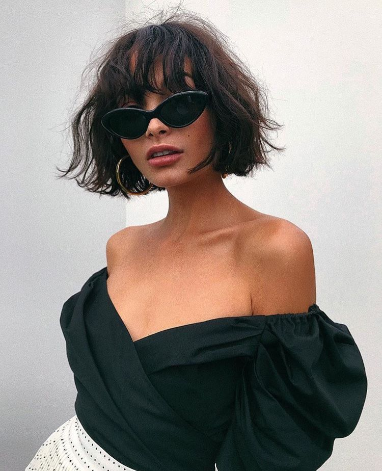
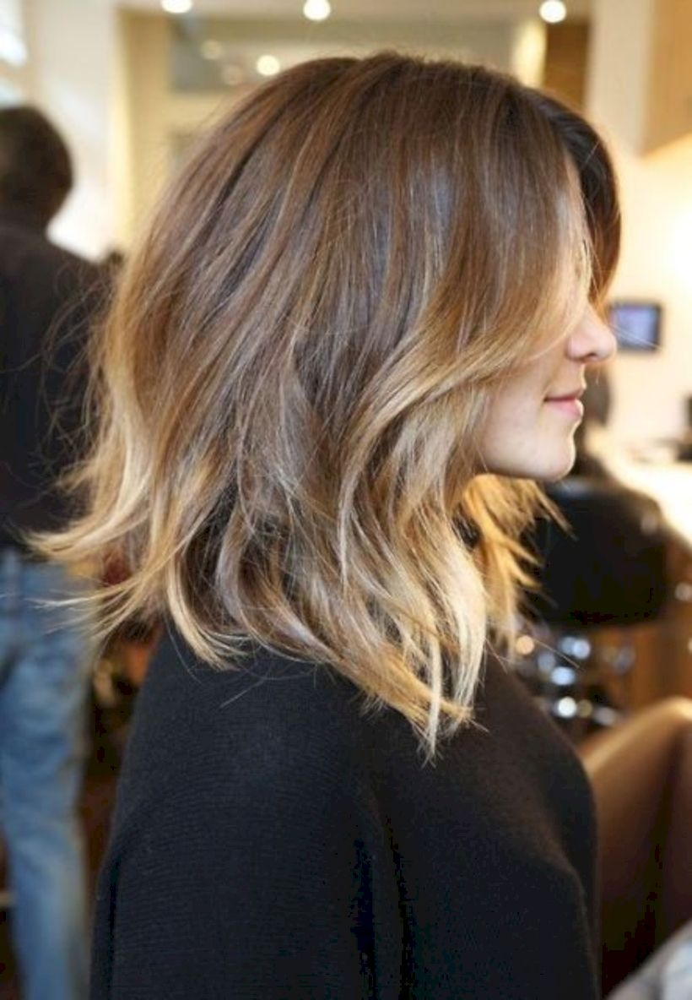

Говорят, что моду на короткие стрижки ввела Коко Шанель, изрядно подпортив свои волосы химией,
она решилась отстричь испорченную длину, результат ей так понравился,
что она долгое время ходила с короткими волосами.
Модное каре
Образцовое каре давно присутствует в «меню» любого салона красоты или парикмахерской.
И сегодня оно не теряет своей популярности, а наоборот популярность каре растет в геометрической прогрессии
Этой стрижке отдают предпочтение многие красавицы по разным причинам.
При кажущейся простоте каре не только освежает цвет лица, но и грамотно обыгрывает его нестандартную форму,
скрывая недостатки, выводя их в преимущество. Острые и грубые черты лица красиво упаковываются в изысканные локоны,
длина которых может варьироваться от средней до максимально укороченной.
Опытный мастер умело подберет ту длину, которая подчеркнет именно вашу индивидуальность.
По желанию можно дополнить каре резаными прядями, кудрями и асимметрией, которая набирает особую популярность в последнее время.